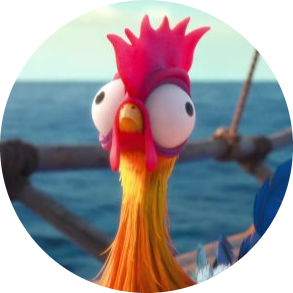

Nomen Nescio
présentation
Discentem in prima anno de Reseauex & Telecommunicationibus, habeo solidas facultates in Linux ac in ParrotOS. Commodo in technologiis ut Docker, HTML, CSS, JavaScript, C++ et Python, possum evolvere applicationes et sitos web efficaciter. Matura et bono animo societatis, sum fervens de mundo informaticae.
Formation
Anno 20XX - 20XX
Example City, 12345
Universitas Example
Gradus - Exempli Gratia, Informatica - in formatione initiali
Anno 20XX - 20XX
Example City, 12345
Schola Secondaria Example
Baccalaureatus - Exempli Gratia, Scientia Computationis et Mathematica
centres d'intérêts
Natatio, cursus pedestris, cyclismus, equitatio (in certaminibus), excursio. Certamen hacking (FCSC et alia CTF), compositio musicae, peregrinationes, programmatio. Sum benefactor in associatione Example sectio “Help and Awarness” quae adiuvat personas victimas piraticae. Sumus circa quinquaginta membra, situati in tota Gallia. Dono circa decem horas mensibus ex mense Augusto 20XX.



contactus
Numero Telephoni: +XX X XX XX XX XX
email: nomen.nescio@example.com
Natus die: XX/XX/XXXX
Domus: Via Example, 123, Example City, Example Country
competentiae
- Bona cognitio in Linux, praesertim in distributionibus ParrotOS, Ubuntu et Kali Linux
- Experientia in usu Docker, pro gestione containerorum. Et in usu machinarum virtualium pro virtualizatione
- Bona notitia linguarum programmationis velut HTML, CSS, Javascript, C++ et Python
linguae
Lingua Anglica: Niveau B1
Lingua Germanica: Niveau A2